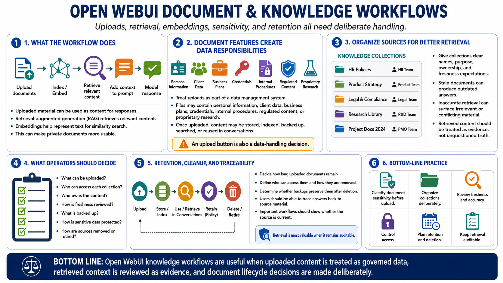

Documents, Knowledge, and Retrieval Workflows
Connecting to LMS... Progress: in progress

Narration
Open WebUI can support document and knowledge workflows where uploaded material is used as context for model responses. At a high level, retrieval-augmented generation involves indexing or retrieving relevant content and placing it into the model's context. Embeddings help represent text for similarity search. This can make private documents more usable, but it also creates new data handling responsibilities.
Document sensitivity should be considered before upload. Files may contain personal information, client data, business plans, credentials, internal procedures, regulated content, or proprietary research. Once uploaded, they may be stored, indexed, backed up, searched, or reused in conversations. Treat document features as part of a data management system, not just a convenience button.
Source organization improves retrieval quality and review. Knowledge collections should have clear names, purpose, ownership, and freshness expectations. Stale documents can produce outdated answers. Inaccurate retrieval can surface irrelevant or conflicting material. Retrieved content should be treated as evidence for the model to use, not unquestioned truth.
Retention and cleanup matter. Decide how long uploaded documents should remain, who can access them, how they are removed, and whether backups preserve them after deletion. For important workflows, users should be able to trace an answer back to source material and understand whether the source is current. Retrieval is most valuable when it remains auditable.